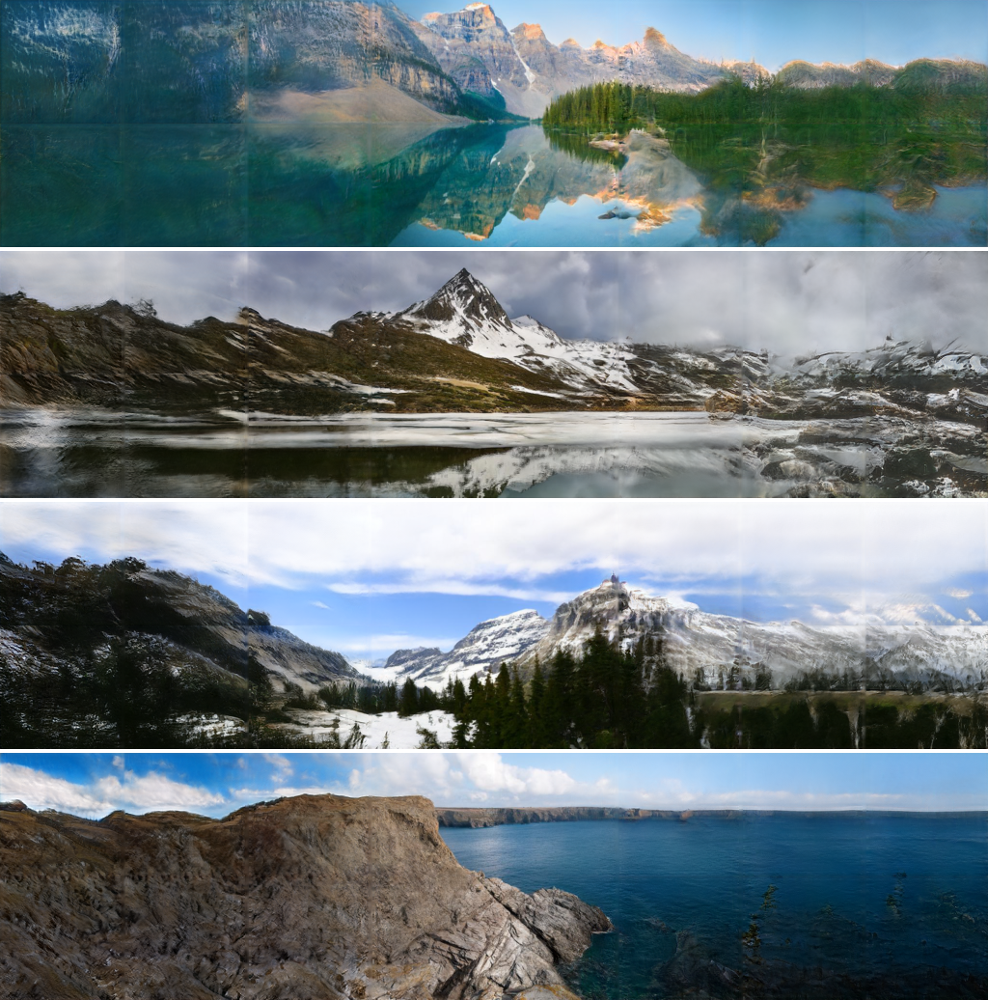
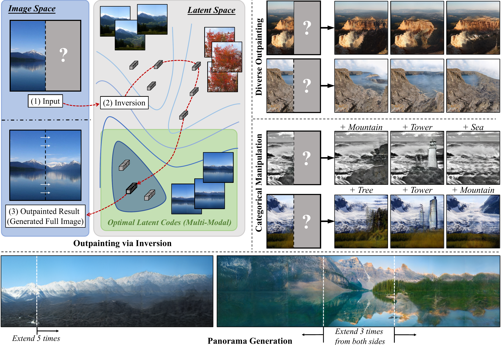
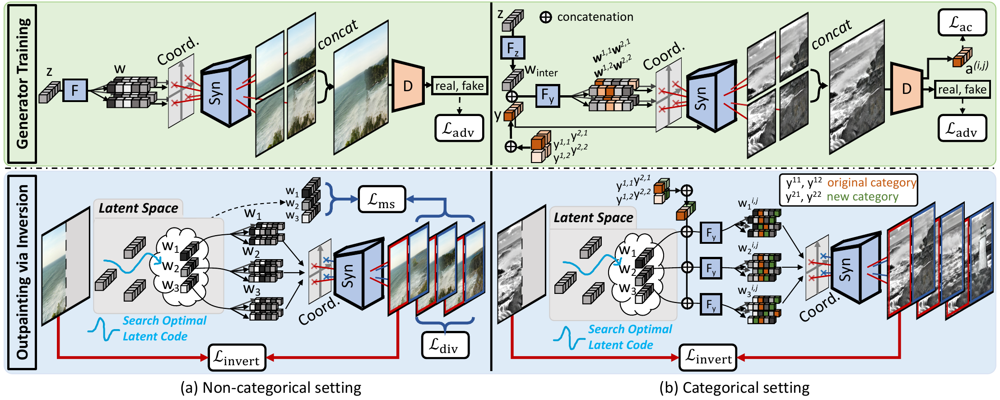

Abstract
Image outpainting seeks for a semantically consistent extension of the input image beyond its available content. Compared to inpainting --- filling in missing pixels in a way coherent with the neighboring pixels --- outpainting can be achieved in more diverse ways since the problem is less constrained by the surrounding pixels.
Existing image outpainting methods pose the problem as a conditional image-to-image translation task, often generating repetitive structures and textures by replicating the content available in the input image.
In this work, we formulate the problem from the perspective of inverting generative adversarial networks.
Our generator renders micro-patches conditioned on their joint latent code as well as their individual positions in the image.
To outpaint an image, we seek for multiple latent codes not only recovering available patches but also synthesizing diverse outpainting by patch-based generation.
This leads to richer structure and content in the outpainted regions.
Furthermore, our formulation allows for outpainting conditioned on the categorical input, thereby enabling flexible user controls.
Extensive experimental results demonstrate the proposed method performs favorably against existing in- and outpainting methods, featuring higher visual quality and diversity.
Citation
Yen-Chi Cheng, Chieh Hubert Lin, Hsin-Ying Lee, Jian Ren, Sergey Tulyakov, Ming-Hsuan Yang, "In&Out: Diverse Image Outpainting via GAN Inversion", in arXiv, 2021.
Bibtex
@article{InOut,
author = {Cheng, Yen-Chi and Lin, Chieh Hubert and Lee, Hsin-Ying and Ren, Jian and Tulyakov, Sergey and Yang, Ming-Hsuan},
title = {In&Out: Diverse Image Outpainting via GAN Inversion},
volume = {abs/},
year = {2021}
}
Overview


Results
Flickr-Landscape
Outpainting results of the collected Flickr-Landscape dataset.

LSUN-Church
Outpainting results of the church cateogry of the LSUN dataset.

Comparisons
The proposed approach is more stable, synthesizes richer context with more complex structures, and is able to handle some of the difficultcomplex scenes.

Multi-directional and irregular-boundary outpainting
The proposed method can naturally handle outpainting to any direction and with irregular boundaries.

Panorama
The proposed method can perform panorama generation of high quality and high structural complexity without repeating patterns.

References
- • Piotr Teterwak, Aaron Sarna, Dilip Krishnan, Aaron Maschinot, David Belanger, Ce Liu, William T Free-man. Boundless: Generative adversarial networks for imageextension. InICCV, 2019, ICCV, 2019
- • Jiahui Yu, Zhe Lin, Jimei Yang, Xiaohui Shen, Xin Lu, Thomas S Huang. Generative image inpainting with contextual attention, CVPR, 2018
- • Jiahui Yu, Zhe Lin, Jimei Yang, Xiaohui Shen, Xin Lu, Thomas S Huang. Free-form image inpainting with gated convolution, ICCV, 2019
- • Zongxin Yang, Jian Dong, Ping Liu, Yi Yang, Shuicheng Yan. Very long natural scenery image prediction by outpainting, ICCV, 2019
- • Rameen Abdal, Yipeng Qin, and Peter Wonka. Image2stylegan++: How to edit the embedded images?, CVPR, 2020